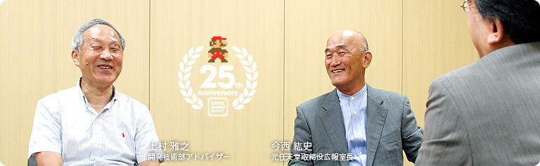
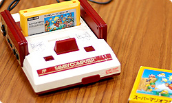

### 「スーパーマリオ２５周年」

<DIV ID="volbox-5"><P CLASS="volnum1"><A CLASS="btn-volnum1" TITLE="社長の代わりに糸井重里さんが訊く" HREF="../vol1/index.html">社長の代わりに糸井重里さんが訊く
<P CLASS="volnum2"><A CLASS="btn-volnum2s" TITLE="ファミコンとマリオ 篇">ファミコンとマリオ 篇
<P CLASS="volnum3"><A CLASS="btn-volnum3" TITLE="『スーパーマリオ』シリーズ開発経験者 篇 その１" HREF="../vol3/index.html">『スーパーマリオ』シリーズ開発経験者 篇 その１
<P CLASS="volnum4"><A CLASS="btn-volnum4" TITLE="『スーパーマリオ』シリーズ開発経験者 篇 その２" HREF="../vol4/index.html">『スーパーマリオ』シリーズ開発経験者 篇 その２
<P CLASS="volnum5"><A CLASS="btn-volnum5" TITLE="『スーパーマリオ』生みの親たち 篇" HREF="../vol5/index.html">『スーパーマリオ』生みの親たち 篇

<DIV ID="main-visual">
<H2>
<DIV ID="pagebox-wrap">
<DIV CLASS="pagebox">
<P CLASS="pagenums"><A>1. 「テレビゲームをキミのところで」
<P CLASS="pagenum"><A HREF="index2.html">2. 家庭で『ドンキーコング』を
<P CLASS="pagenum"><A HREF="index3.html">3. トラブル続きだったファミコン黎明期
<P CLASS="pagenum"><A HREF="index4.html">4. ファミコンカセットの集大成
<P CLASS="pagenum"><A HREF="index5.html">5. ５０年後も１００年後も遊べるゲーム

<DIV>

<DIV ID="int-box-wrap" CLASS="name5">
<H3>
<DIV CLASS="int-box"><DIV CLASS="int-name"><P>岩田
<DIV CLASS="int-text"><P>今日は２人の大先輩からお話を訊かせていただきます。<br>&nbsp;<br>今年の９月１３日で『スーパーマリオブラザーズ』の発売から<br>ちょうど２５年になりますが、<br>多くのみなさんにご愛顧いただきつづけることができたおかげで、<br>登場から四半世紀が経ったいまも、『スーパーマリオ』は元気です。<br>今回、ご支持いただいたみなさんへの感謝を込めて<br>２５周年を記念したキャンペーンを展開させていただくことになりました。<br>&nbsp;<br>それと同時に、<br>任天堂がトランプ・花札の会社から、<br>ふとしたきっかけでおもちゃをつくるようになり、<br>電子機器技術に出会い、<br>そしてビデオゲームの会社として変貌していくときに、<br>会社の中心におられたお２人にとって、<br>『スーパーマリオ』が生まれていく過程がどう見えていたのか、<br>そういったお話をいまお訊きして<br>何らかのかたちで残しておくことは、<br>歴史上、とても意義があるのではないかと思いまして、<br>今回、「社長が訊く」への登場をお願いしたという次第です。
<DIV CLASS="clear"><DIV CLASS="int-box"><DIV CLASS="int-name"><P>今西
<DIV CLASS="int-text"><P>それはたいそうな役割ですな（笑）。
<DIV CLASS="clear"><DIV CLASS="int-box"><DIV CLASS="int-name"><P>岩田
<DIV CLASS="int-text"><P>はい（笑）。<br>では、よろしくお願いいたします。
<DIV CLASS="clear"><DIV CLASS="int-box"><DIV CLASS="int-name"><P>今西・上村
<DIV CLASS="int-text"><P>よろしくお願いします。
<DIV CLASS="clear"><DIV CLASS="int-box"><DIV CLASS="int-name"><P>岩田
<DIV CLASS="int-text"><P>今西さんはファミコンが出た当時、総務部の責任者で、<br>その後、広報室の室長をされておられましたし、<br>上村さんはハード開発責任者だったわけですが、<br>まさにこの、白とえんじ色のファミコンに黄色いカセットという、<br>この組み合わせの『スーパーマリオ』は<br>日本のソフト販売数の記録として、いまだに破られていないんです。
<DIV CLASS="clear"><DIV CLASS="img-photo">
<DIV CLASS="int-box"><DIV CLASS="int-name"><P>今西
<DIV CLASS="int-text"><P>ああ、そうなんですね。
<DIV CLASS="clear"><DIV CLASS="int-box"><DIV CLASS="int-name"><P>岩田
<DIV CLASS="int-text"><P>ゲーム機の販売台数としては<br>ニンテンドーDSはファミコンの台数より多いですし、<br>世界で売れたソフトの本数は<br>『Wii Sports』<sup>（※1）</sup>のほうが多かったりするんですが、<br>日本での販売数は、国内でのパッケージソフトとして<br>『スーパーマリオブラザーズ』がいまだにダントツなんです。
<DIV CLASS="clear"><DIV CLASS="int-box"><DIV CLASS="int-name"><P>今西
<DIV CLASS="int-text"><P>うん。
<DIV CLASS="clear"><DIV CLASS="int-box"><DIV CLASS="int-name"><P>上村
<DIV CLASS="int-text"><P>それはすごいな。
<DIV CLASS="notes-box"><DIV CLASS="notes-num"><P>※1
<DIV CLASS="notes-text"><P>『Wii Sports』＝「テニス」「ゴルフ」「ボウリング」「ベースボール」「ボクシング」の５種目を収録したスポーツゲーム。２００６年１２月、Wiiと同時発売。
<DIV CLASS="clear">
<DIV CLASS="clear">

<DIV CLASS="clear">
<DIV CLASS="clear"><DIV CLASS="int-box"><DIV CLASS="int-name"><P>岩田
<DIV CLASS="int-text"><P>そこでまず、最初にファミコンが生まれていく<br>過程の話を上村さんからお訊きしたいのですが、<br>そもそも、どうやってファミコンをつくりはじめたんですか？
<DIV CLASS="clear"><DIV CLASS="int-box"><DIV CLASS="int-name"><P>上村
<DIV CLASS="int-text"><P>長い話になりますが・・・。
<DIV CLASS="clear"><DIV CLASS="int-box"><DIV CLASS="int-name"><P>岩田
<DIV CLASS="int-text"><P>はい、話せば長いことになりますよね（笑）。
<DIV CLASS="clear"><DIV CLASS="int-box"><DIV CLASS="int-name"><P>上村
<DIV CLASS="int-text"><P>困りますね（笑）。<br>んー、どこから話をしたらいいのか・・・。<br>いや、やはり、そもそものはじまりは、山内前社長から<br>僕の家に電話がかかってきたのがスタートなんです。<br>これは事実なんですね。そのときに<br>「ゲーム＆ウオッチ<sup>（※2）</sup>の先が見えた」という話があって・・・。
<DIV CLASS="clear"><DIV CLASS="img-photo">
<DIV CLASS="int-box"><DIV CLASS="int-name"><P>岩田
<DIV CLASS="int-text"><P>当時の任天堂にとって、<br>メインの商品はゲーム＆ウオッチだったんですよね。
<DIV CLASS="clear"><DIV CLASS="int-box"><DIV CLASS="int-name"><P>上村
<DIV CLASS="int-text"><P>ええ。ですから、ゲーム＆ウオッチの開発を担当していた<br>横井（軍平）さん<sup>（※3）</sup>の開発一部の人数が増えて、<br>逆にわたしの開発二部は、人数が少なくなっていた時期で、<br>わたしがわりとヒマで、家にけっこう早く帰っていたんです（笑）。
<DIV CLASS="clear"><DIV CLASS="int-box"><DIV CLASS="int-name"><P>岩田
<DIV CLASS="int-text"><P>開発部門の責任者なのに、ですか？（笑）
<DIV CLASS="clear"><DIV CLASS="int-box"><DIV CLASS="int-name"><P>上村
<DIV CLASS="int-text"><P>はい（笑）。でも、本当にすることもなかったですし、<br>だから山内さんは僕に気を遣って<br>電話をされたんだろうと思ったくらいでしたから。<br>それで、山内さんは電話の向こうから<br>「次はテレビゲームや。それをキミのところでやらんか？」<br>と言われたんです。でもまあ、<br>テレビゲームはその前からもいろいろありましたよね。
<DIV CLASS="clear"><DIV CLASS="int-box"><DIV CLASS="int-name"><P>岩田
<DIV CLASS="int-text"><P>任天堂でも<SCRIPT LANGUAGE="JavaScript" TYPE="text/javascript">
<!--
	document.write('<A HREF="player.html?width=260&amp;height=360&amp;id=001" CLASS="thickbox 001" TITLE="「テレビゲーム６」や「１５」"><SPAN>「テレビゲーム６」や「１５」<'+'/SPAN><'+'/A>');
//-->
</SCRIPT><NOSCRIPT><A HREF="img/slide001.jpg"><SPAN>「テレビゲーム６」や「１５」</SPAN></NOSCRIPT><sup>（※4）</sup>などの<br>カセット方式ではない、ソフト内蔵式のテレビゲームを出していました。
<DIV CLASS="notes-box"><DIV CLASS="notes-num"><P>※2
<DIV CLASS="notes-text"><P>ゲーム＆ウオッチ＝１９８０年発売の『ボール』を皮切りに、１９８４年まで、５９タイトルが登場し、全世界で４３４０万個を販売した。
<DIV CLASS="clear">
<DIV CLASS="clear">
<DIV CLASS="notes-box"><DIV CLASS="notes-num"><P>※3
<DIV CLASS="notes-text"><P>横井軍平さん＝任天堂在職中にゲーム＆ウオッチやゲームボーイなどのゲーム機のほか、ファミリーコンピュータロボットや『Dr. MARIO』などを手がける。故人。
<DIV CLASS="clear">
<DIV CLASS="clear">
<DIV CLASS="notes-box"><DIV CLASS="notes-num"><P>※4
<DIV CLASS="notes-text"><P>「テレビゲーム６、１５」＝１９７７年７月発売の「カラーテレビゲーム６」と「カラーテレビゲーム１５」。それぞれ６種類と１５種類のテニス、または卓球ゲームを遊ぶことができた。
<DIV CLASS="clear">
<DIV CLASS="clear">

<DIV CLASS="clear">
<DIV CLASS="clear"><DIV CLASS="int-box"><DIV CLASS="int-name"><P>上村
<DIV CLASS="int-text"><P>そういう意味では、<br>その延長線上にある商品ということになるんですけど、<br>そのときに山内さんが条件を出されて、<br>これまでのようなソフト内蔵式のテレビゲームではなく、<br>その当時、主流になりはじめたカセット方式を採用して、<br>しかも「３年間は競争相手が出ないような機械をつくれ」と。
<DIV CLASS="clear"><DIV CLASS="int-box"><DIV CLASS="int-name"><P>岩田
<DIV CLASS="int-text"><P>はあー、最初からそれを・・・。
<DIV CLASS="clear"><DIV CLASS="int-box"><DIV CLASS="int-name"><P>上村
<DIV CLASS="int-text"><P>最初からそれを切り出されたんです。
<DIV CLASS="clear"><DIV CLASS="int-box"><DIV CLASS="int-name"><P>岩田
<DIV CLASS="int-text"><P>でも、３年間持たせるのは大変な・・・。
<DIV CLASS="clear"><DIV CLASS="int-box"><DIV CLASS="int-name"><P>上村
<DIV CLASS="int-text"><P>考えられないでしょう？
<DIV CLASS="clear"><DIV CLASS="int-box"><DIV CLASS="int-name"><P>岩田
<DIV CLASS="int-text"><P>まあ、任天堂だけが特別な武器を持っているわけではありませんし、<br>技術者として考えると、とても無茶ですよね。
<DIV CLASS="clear"><DIV CLASS="int-box"><DIV CLASS="int-name"><P>上村
<DIV CLASS="int-text"><P>そう。かといって、僕が何かを言ったところで、<br>聞いていただける相手ではありませんし（笑）。
<DIV CLASS="clear"><DIV CLASS="int-box"><DIV CLASS="int-name"><P>岩田
<DIV CLASS="int-text"><P>（笑）
<DIV CLASS="clear"><DIV CLASS="int-box"><DIV CLASS="int-name"><P>上村
<DIV CLASS="int-text"><P>当時の任天堂としては<br>ゲーム＆ウオッチで優位性を保つことができていたので、<br>「それと同じような状況をテレビゲームでつくりなさい」<br>ということだったんです。
<DIV CLASS="clear"><DIV CLASS="int-box"><DIV CLASS="int-name"><P>岩田
<DIV CLASS="int-text"><P>でも、しばらく優位性を保つためには、<br>その商品を出した瞬間は、多くの人が<br>「まだ早いんじゃないの？」と感じるくらい、<br>すごく背伸びをするということですよね？
<DIV CLASS="clear"><DIV CLASS="img-photo">
<DIV CLASS="int-box"><DIV CLASS="int-name"><P>上村
<DIV CLASS="int-text"><P>そうです。それに、コンピュータは<br>半導体メーカーがつくっているわけですから、<br>「うちだけ優れたものを独占的に」というのは、欲深い話ですし、<br>どう考えてもそう簡単に実現できる話ではなかったんです。<br>しかも任天堂は、カセット方式のテレビゲームのマーケットでは<br>最後発と言ってもいいようなタイミングでしたから・・・。
<DIV CLASS="clear"><DIV CLASS="int-box"><DIV CLASS="int-name"><P>岩田
<DIV CLASS="int-text"><P>すでにいろんなメーカーさんが<br>家庭用テレビゲームを発売されていました。
<DIV CLASS="clear"><DIV CLASS="int-box"><DIV CLASS="int-name"><P>上村
<DIV CLASS="int-text"><P>ええ。とはいえ、自分がヒマなこともありましたし、<br>山内さんから「つくれ」と言われれば、<br>「はい」と返事をするより仕方なかったんですけど（笑）。
<DIV CLASS="clear"><DIV CLASS="int-box"><DIV CLASS="int-name"><P>岩田
<DIV CLASS="int-text"><P>（笑）。<br>「つくれ」と言われたのはいつ頃のことだったんですか？
<DIV CLASS="clear"><DIV CLASS="int-box"><DIV CLASS="int-name"><P>上村
<DIV CLASS="int-text"><P>１９８１年の１１月です。
<DIV CLASS="clear"><DIV CLASS="int-box"><DIV CLASS="int-name"><P>岩田
<DIV CLASS="int-text"><P>ああ、ゲーム＆ウオッチが出た翌年ですね。
<DIV CLASS="clear"><DIV CLASS="int-box"><DIV CLASS="int-name"><P>上村
<DIV CLASS="int-text"><P>けっこうゲーム＆ウオッチの調子が良くて。
<DIV CLASS="clear"><DIV CLASS="int-box"><DIV CLASS="int-name"><P>岩田
<DIV CLASS="int-text"><P>調子が良かったけれども、「次を」ということですね。
<DIV CLASS="clear"><DIV CLASS="int-box"><DIV CLASS="int-name"><P>上村
<DIV CLASS="int-text"><P>そうなんです。<br>しかも、その翌年の「８２年の中頃までにつくれ」<br>という命題を与えられたんですけど、<br>そんな短期間にできるはずもなくて・・・。
<DIV CLASS="clear"><DIV CLASS="int-box"><DIV CLASS="int-name"><P>岩田
<DIV CLASS="int-text"><P>ＩＣからつくるわけですからね。<br>ちなみに、８２年はわたしが社会に出た年です（笑）。
<DIV CLASS="clear"><DIV CLASS="int-box"><DIV CLASS="int-name"><P>今西
<DIV CLASS="int-text"><P>それはそれは（笑）。
<DIV CLASS="clear"><DIV CLASS="int-box"><DIV CLASS="int-name"><P>上村
<DIV CLASS="int-text"><P>それで、とにかくつくってみることになりまして、<br>実際にテレビゲームの研究をはじめたんですが、<br>もうひとつの条件が出たんです。<br>「シャープさんとは、やったらあかん」と。
<DIV CLASS="clear"><DIV CLASS="int-box"><DIV CLASS="int-name"><P>岩田
<DIV CLASS="int-text"><P>それは・・・。
<DIV CLASS="clear"><DIV CLASS="int-box"><DIV CLASS="int-name"><P>上村
<DIV CLASS="int-text"><P>これはかなり効きました（笑）。<br>僕はシャープさんといっしょにやるつもりでしたので。
<DIV CLASS="clear"><DIV CLASS="int-box"><DIV CLASS="int-name"><P>岩田
<DIV CLASS="int-text"><P>もともと上村さんはシャープさんのご出身ですし、<br>ゲーム＆ウオッチも同社との関係でつくられていましたから、<br>シャープさんとやるのが自然な流れですよね。
<DIV CLASS="clear"><DIV CLASS="int-box"><DIV CLASS="int-name"><P>上村
<DIV CLASS="int-text"><P>そうなんですよ。<br>でも、理由はとてもかんたんなんです。<br>「いまシャープさんに頼んだらゲーム＆ウオッチがつくれんようになる」と。
<DIV CLASS="clear"><DIV CLASS="img-photo">
<DIV CLASS="int-box"><DIV CLASS="int-name"><P>岩田
<DIV CLASS="int-text"><P>ああ、たしかにそうですね。
<DIV CLASS="clear"><DIV CLASS="int-box"><DIV CLASS="int-name"><P>上村
<DIV CLASS="int-text"><P>そうなんです。それはたしかにその通りだと思いまして、<br>それで、協力してくれるところを見つけようと<br>主要な電子メーカーをひととおりあたってはみたんですが、<br>すべての会社から「ＮＯ」と言われてしまったんです。
<DIV CLASS="clear"><DIV CLASS="int-box"><DIV CLASS="int-name"><P>岩田
<DIV CLASS="int-text"><P>どうしてそう言われたんでしょうか？
<DIV CLASS="clear"><DIV CLASS="int-box"><DIV CLASS="int-name"><P>上村
<DIV CLASS="int-text"><P>表向きの理由は、ワープロやらパソコン用のＲＡＭが<br>大増産に入る直前の時期だったんです。<br>だから、テレビゲームのような未知の商品に<br>対応できるようなチームがいないと。<br>でも、正直に言うと<br>「どうしたらいいかわからん」ということでしょう。<br>「どういうものを任天堂が望んでいるか、よくわからん」と。<br>それに「任天堂がそれを設計できるとは思えない」と。<br>そんな理由があったと思うんです。
<DIV CLASS="clear"><DIV CLASS="int-box"><DIV CLASS="int-name"><P>岩田
<DIV CLASS="int-text"><P>当時はテレビゲームというものが<br>やがてどういう商品になるのか、将来性や市場規模も含めて<br>何も見えていなかったということなんですね。
<DIV CLASS="clear"><DIV CLASS="int-box"><DIV CLASS="int-name"><P>上村
<DIV CLASS="int-text"><P>そうだったと思います。<br>そこで「どうしようか・・・」と思っていたときに、<br>これもまた本当に偶然なんですけど、<br>たまたまリコーさんから電話がかかってきたんです。
<DIV CLASS="clear"><DIV ID="asks-pagination">
<DIV ID="page-next"><A HREF="index2.html">2. 家庭で『ドンキーコング』を
<DIV CLASS="clear">
<DIV CLASS="clear">
<DIV ID="ftr">
<P CLASS="home"><A HREF="../../../../index.html">任天堂ホームページ
<P CLASS="pagetop"><A HREF="#pagetop">ページの一番上へ
<DIV CLASS="clear">

<DIV CLASS="clear">
</BODY>
</HTML>
